Here are some possible updates for ship appearance & customization. Customization is fun.
Here's our bland test ship (the shots here are not from the game - this would require more work. Shaders are here in any case.).
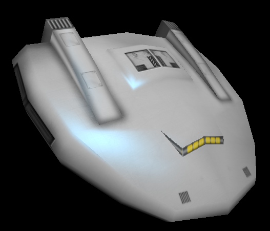It is textured with one (mostly) grayscale texture, 1024x1024 in this case.
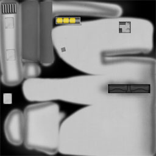To customize this appearance, we can pick a pattern and three colours (selectable for the player at a shipyard, presets and randomized for NPCs). Patterns are grayscale textures that determine colour areas on the ship, and use the same UV channel as the ship texture. Here are three different patterns:
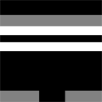 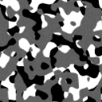These can be quite small (Even 32x32, if there is no fine detail). The results looks like this:
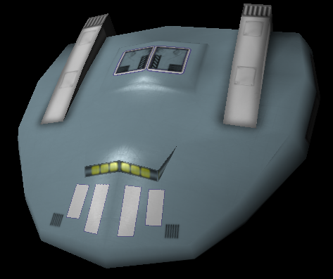 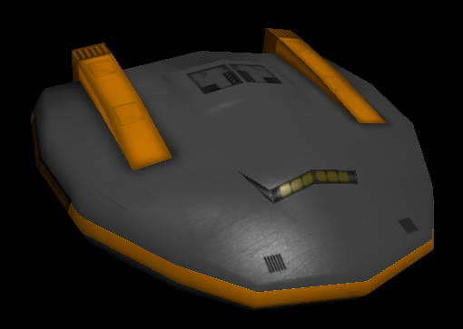 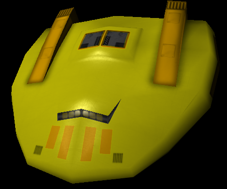 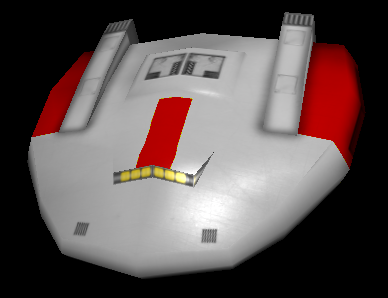 Same model, slightly more exotic patterns: 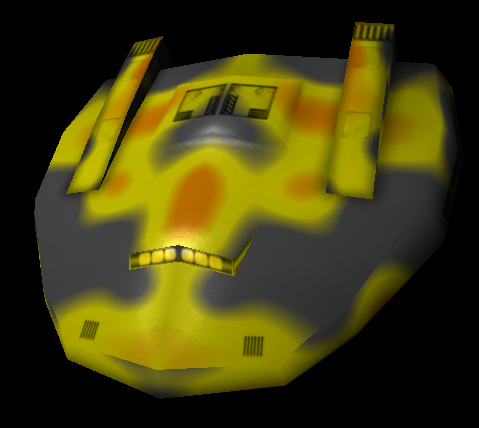 Pirates, probably! 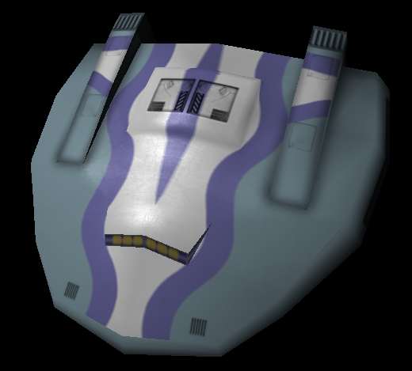Patterns are ship model specific, colours can be anything. Since the ship model is neatly unwrapped and uses only one texture, new patterns can be made quickly without altering the models or adding huge textures.
Colours themselves are passed as generated 1d textures (zoomed in here):
Hottest new techniques from early/mid 2000s :)
Grayscale maps that determine intensity of specular highlights to break the evenness. Every model should support them.
This one has a car paint like effect:
 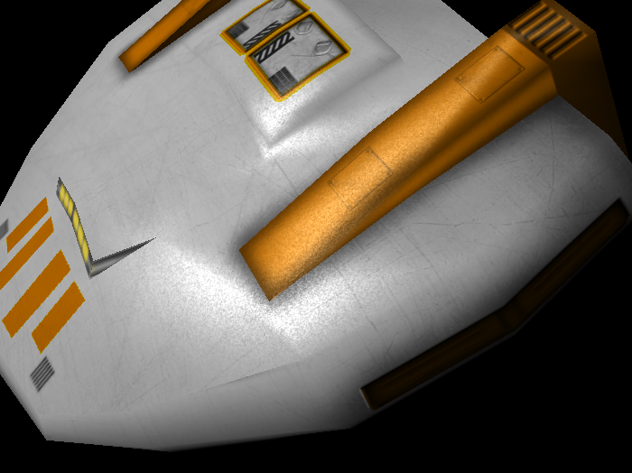
Looks better in motion than in images...
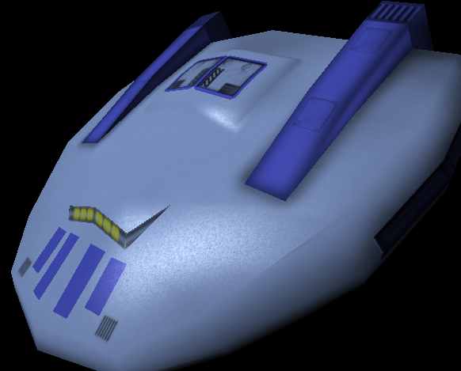
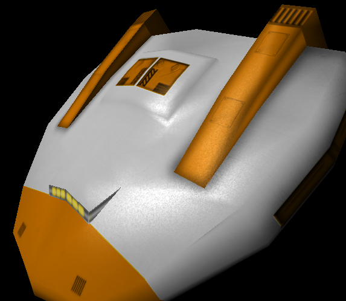
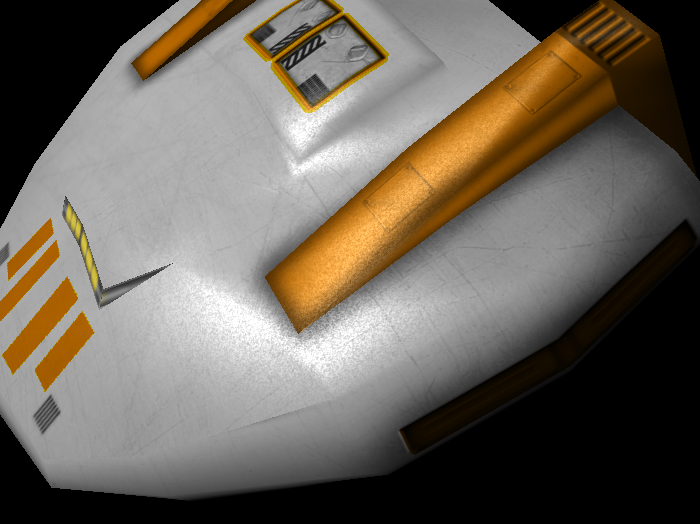
Looks better in motion than in images...
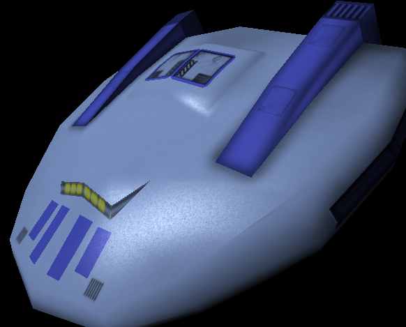
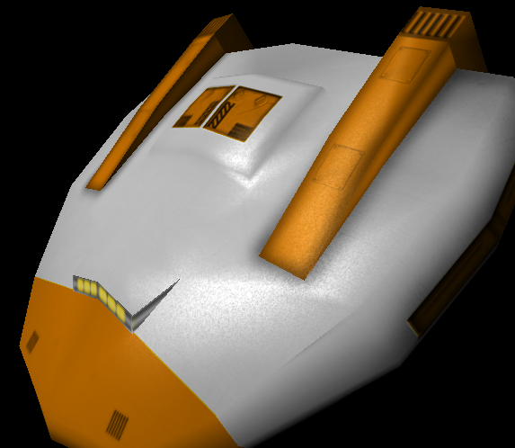
This one is more traditional dust & scratches variety:
 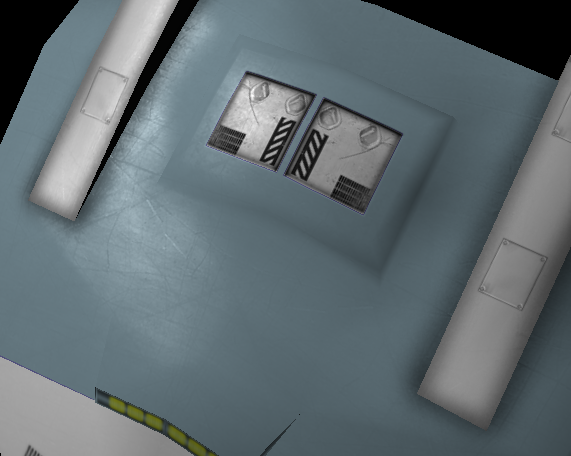
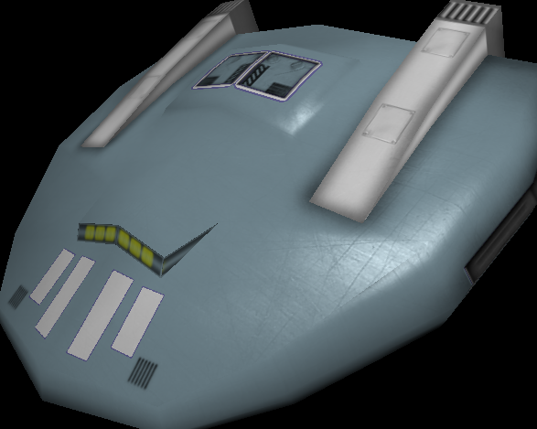
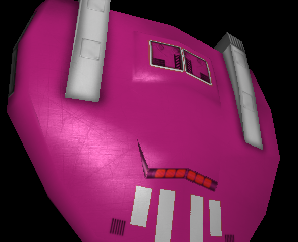
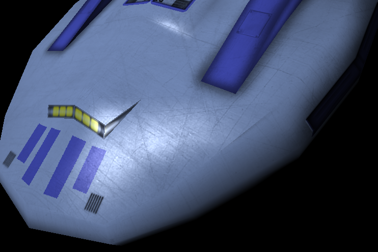
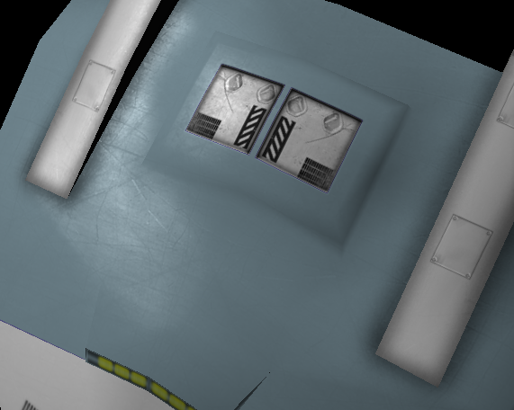
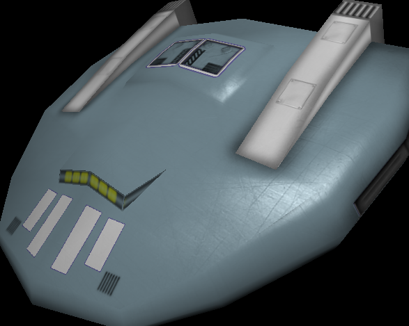
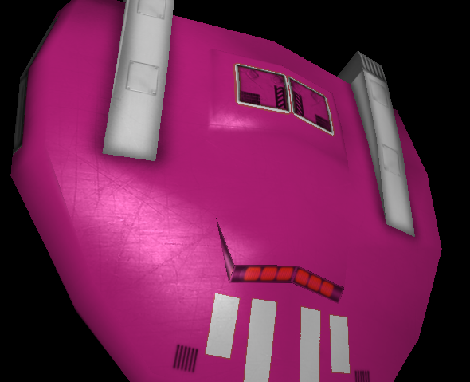
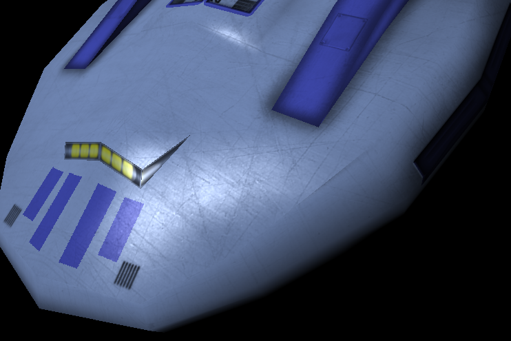
Small textures projected onto ships, for faction logos, corporation insignia etc.
I've not yet figured out what's the best way to implement the decal support. Probably set the projector position & direction in .lua, generate the texture coordinates to a spare texture channel. There would probably be one decal texture per model limitation.
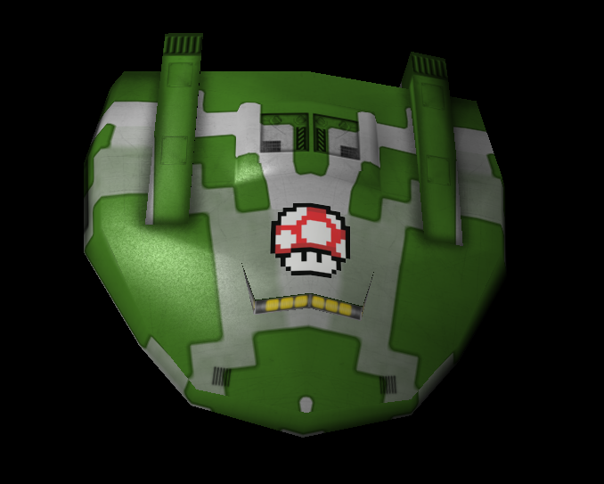 The projection here is achieved by luck+hand tweaked. 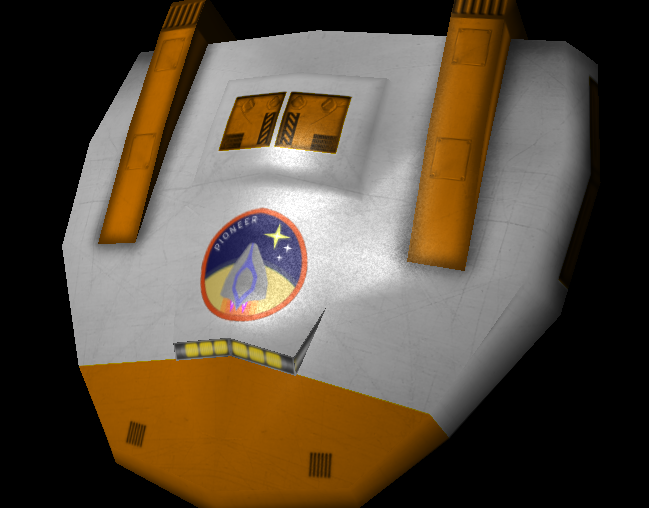Already in game in some form, but all ship models should support them.
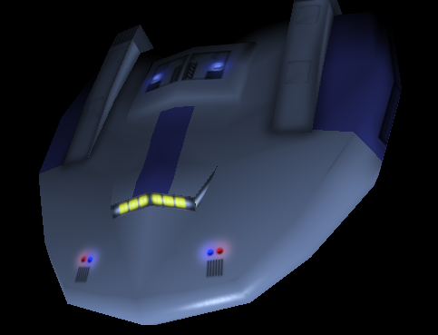 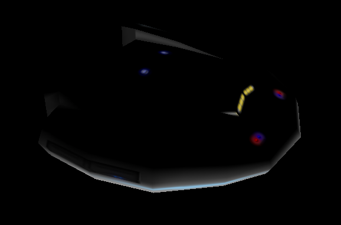One colour, No patterns, no decals, no specular or glow maps.